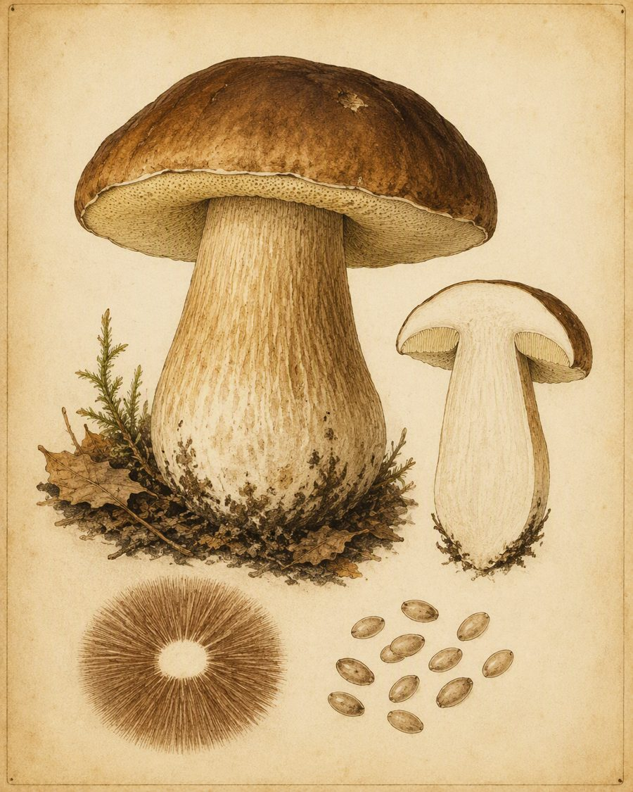
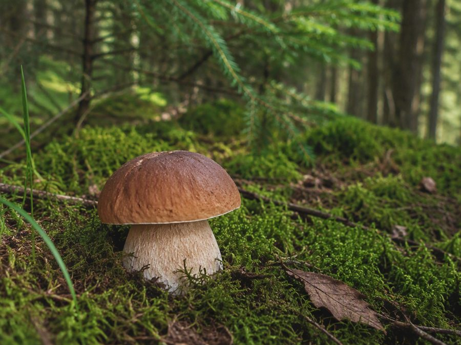
Белый гриб
Boletus edulis
Король леса: плотная белая мякоть, ореховый аромат. Растёт под елями, соснами и дубами.
- Семейство
- Болетовые
- Сезон
- июнь — октябрь
- Съедобность
- съедобный
Грибной атлас
Грибной атлас помогает отличить съедобные виды от ядовитых: у каждого гриба есть ботаническая таблица, семейство, сезон плодоношения и отметка о съедобности. Задуман как энциклопедия, которая всегда под рукой.


Boletus edulis
Король леса: плотная белая мякоть, ореховый аромат. Растёт под елями, соснами и дубами.
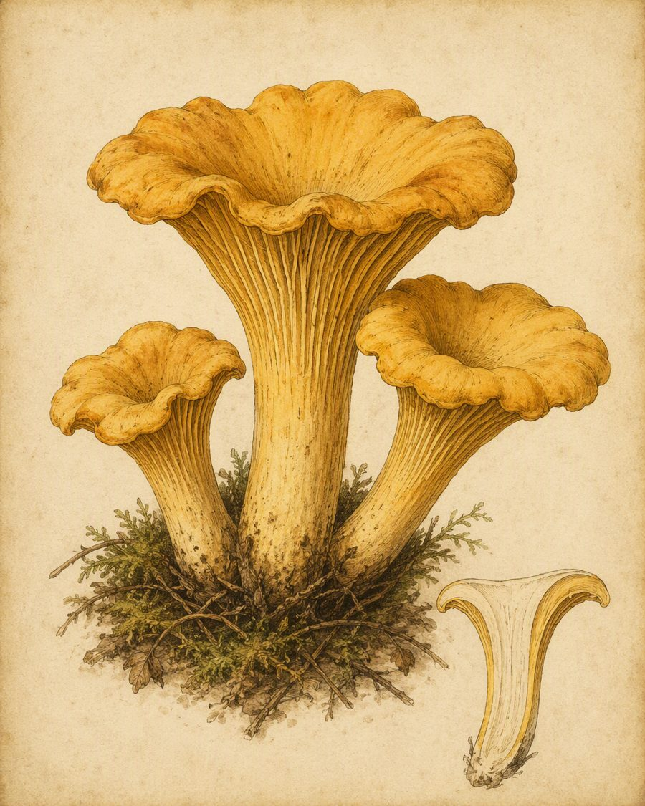
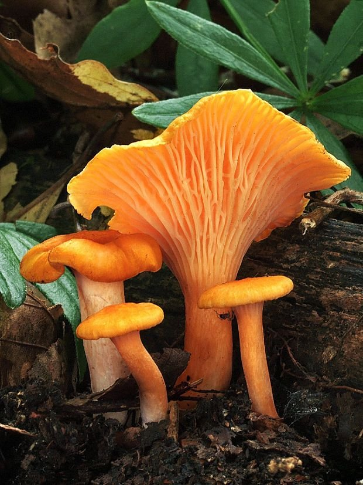
Cantharellus cibarius
Ярко-жёлтая воронка с фруктовым запахом. Почти не бывает червивой — мякоть не по вкусу личинкам.
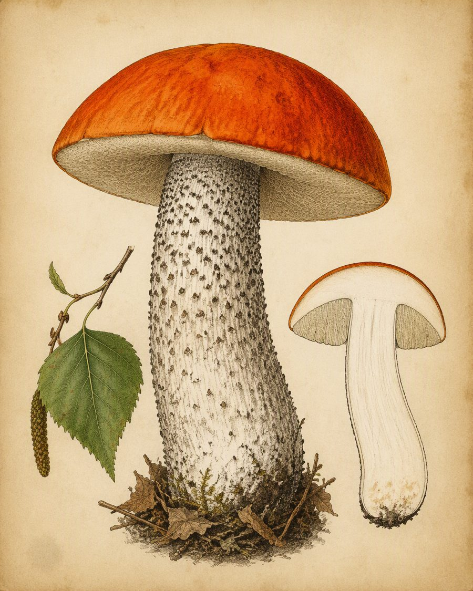
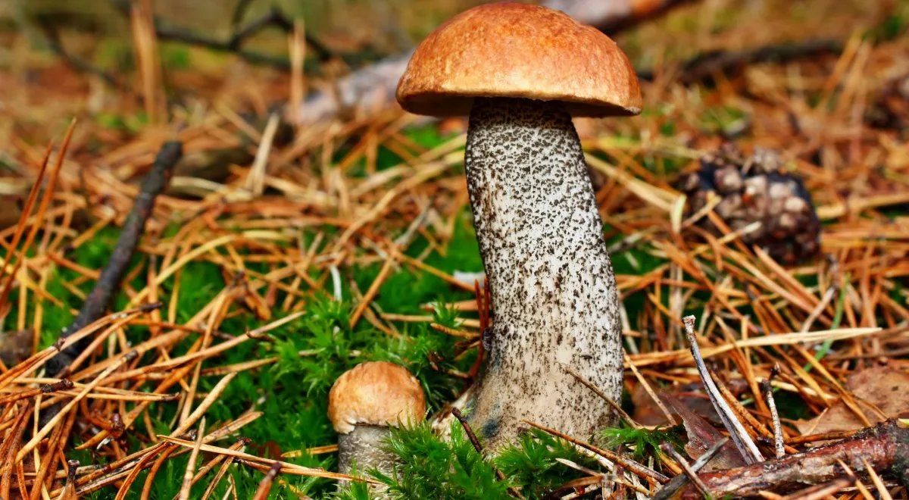
Leccinum aurantiacum
Огненно-рыжая шляпка и ножка в тёмных чешуйках. Верный спутник молодых осинников.
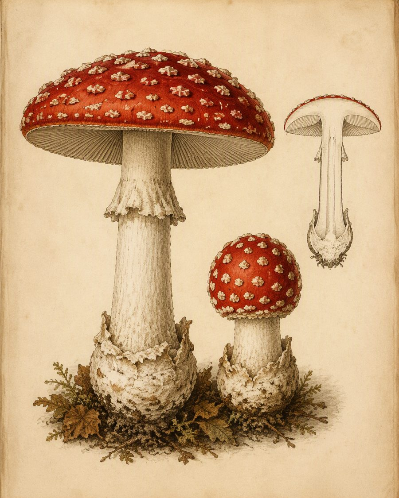
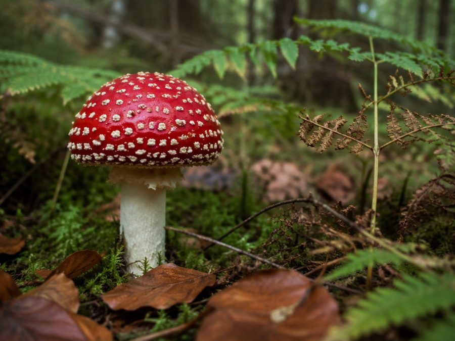
Amanita muscaria
Самый узнаваемый гриб мира. Красив, но токсичен: вызывает отравления и галлюцинации.
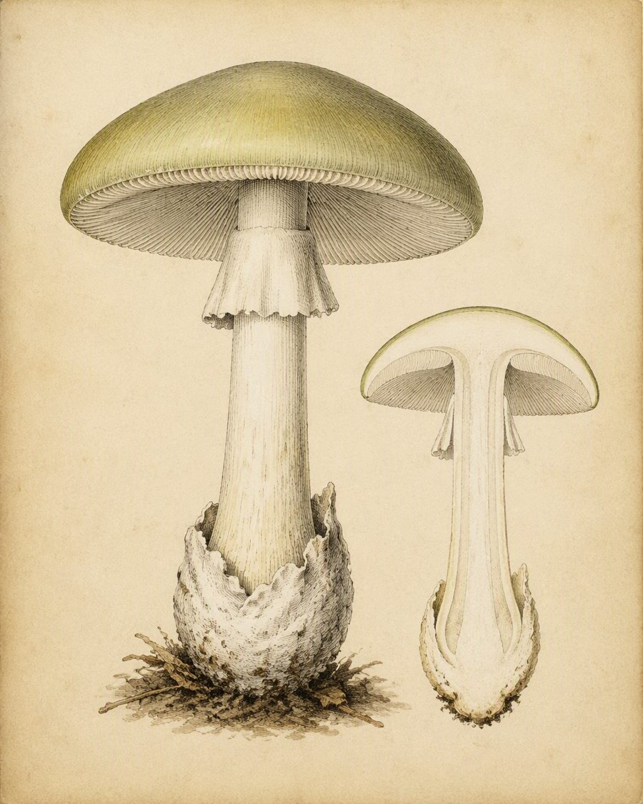
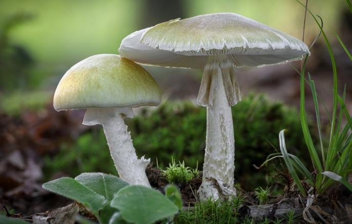
Amanita phalloides
Самый опасный гриб наших лесов. Даже небольшой кусочек смертельно поражает печень.
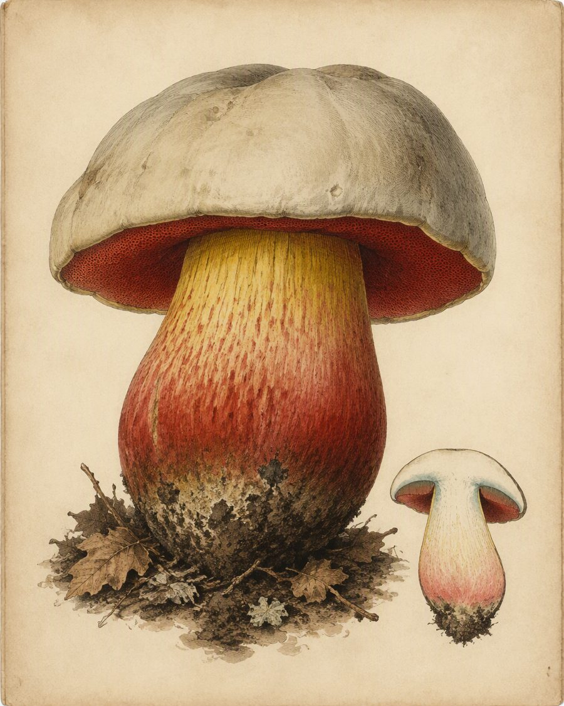
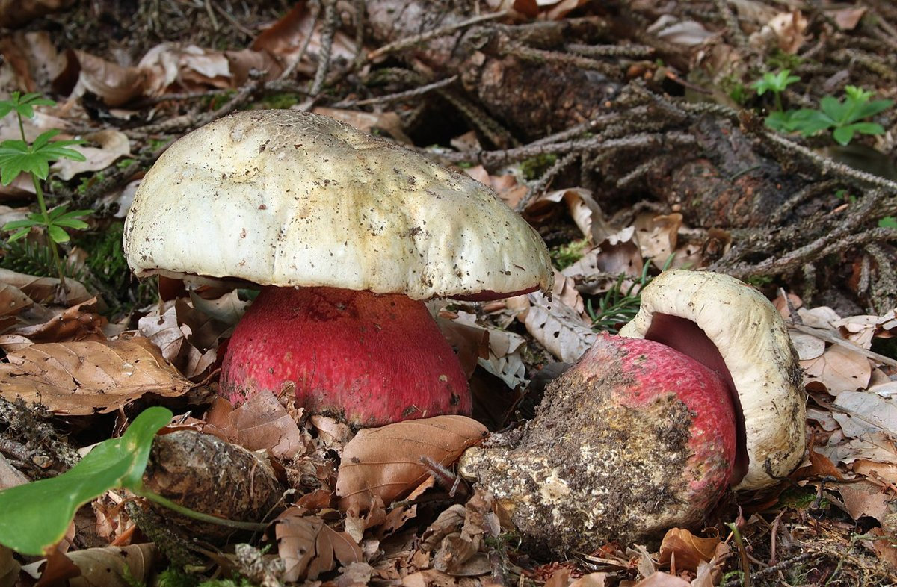
Rubroboletus satanas
Массивный двойник белого. Мякоть на срезе синеет — верный признак опасного вида.
Поиск заработает в следующих лабораторных — пока форма лишь показывает будущий интерфейс.
Начните с таблицы: сравните шляпку, ножку и мякоть найденного гриба с гравюрой. Затем проверьте семейство и сезон — съедобные виды редко растут не в свой срок. Золотое правило грибника простое: если сомневаешься хотя бы в одном признаке — гриб остаётся в лесу.